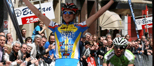
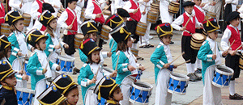

|
 |
| MAIATZAK 1 MAYO | |
9:30 |
LXXX. Santikutz Txirrindulari Klasikaren irteera Telleriarteko Txirrindulari Elkarteak antolaturik. |
10:00 |
Probintzi mailako Bola Txapelketa Danantzako Herri bolatokian Danantzako Bola Elkartearen laguntzarekin. Izen ematea 10:00etatik 11:30etara. |
10:30 |
Probintzi mailako Plater Tiraketa Urtazar Tiro Zelaian Tiro Olinpiko taldeak antolaturik. |
12:00 |
Doinua Gazte Banda eta Legazpi Musika Bandaren kontzertu bateratua Euskal Herria plazan. Euria balitz Azokan. |
13:30 |
Txirrindulari frogaren iritsiera Kale Nagusian eta Sari banaketa.  |
16:00 |
Bakarkako Xake Txapelketa “suitzar” erara Elizako Arkupeetan Santikutz Xake Elkarteak sustaturik. |
17:30 |
Haur eta gazte Danborradaren irteera Laubidetik. Eguraldi txarra balitz 18:00etan Urbeltz pilotalekuan egingo da ekitaldia.  |
18:45 |
Danborradaren iritsiera Euskal Herria plazan. Euria balitz Urbeltz Pilotalekuan egingo da ekitaldia. |
19:30 |
Disko festa Jon Urbietarekin gaztetxoenentzat Euskal Herria plazan. |
23:00 |
Disko festa Oihan Vegarekin Euskal Herria plazan. Disco-fiesta con Oihan Vega en Euskal Herria plaza. |
 |
15:00MUS "RELAMPAGO" KALEKO TXOZNAN 10€ BIKOTEKO |
18:00HERRIKO TALDEEN KONTZERTUAK GAZTETXEAN EGUN OSOAN ZEHAR |